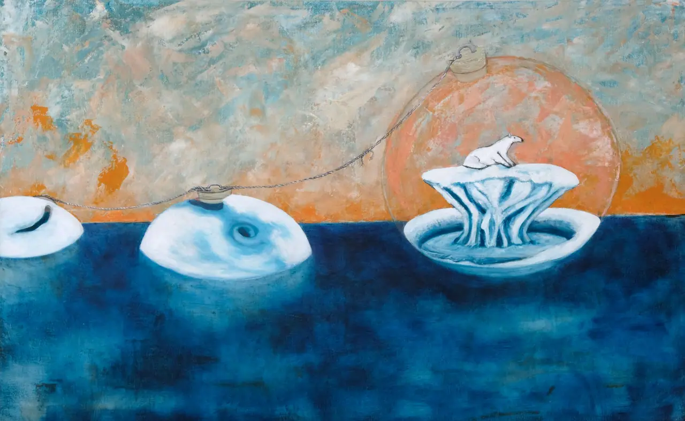
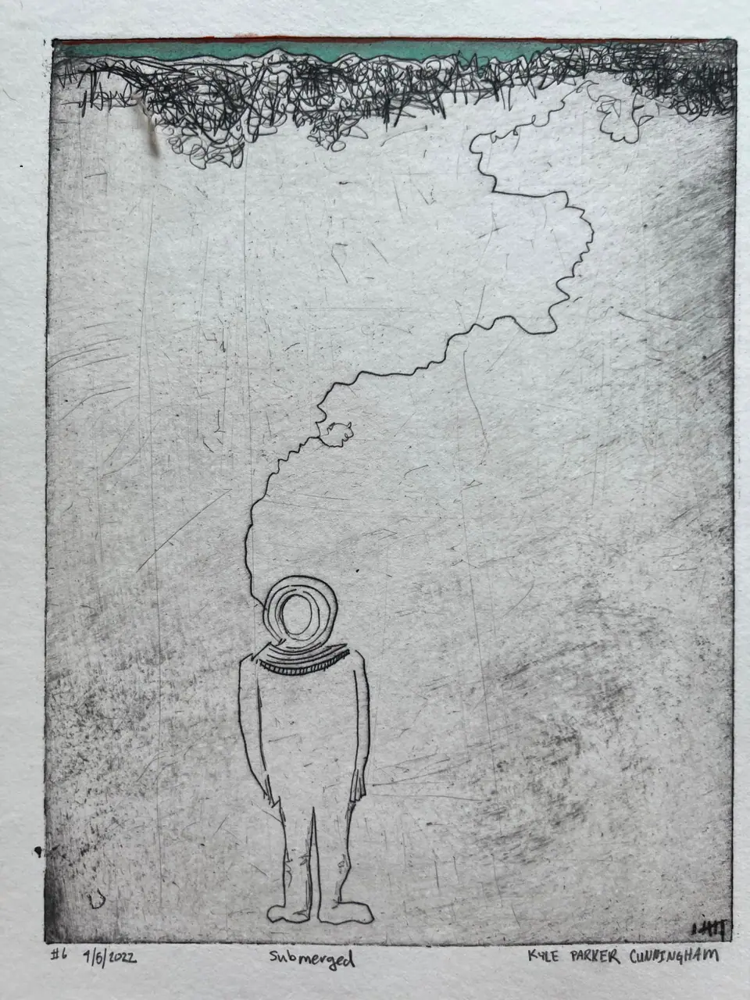
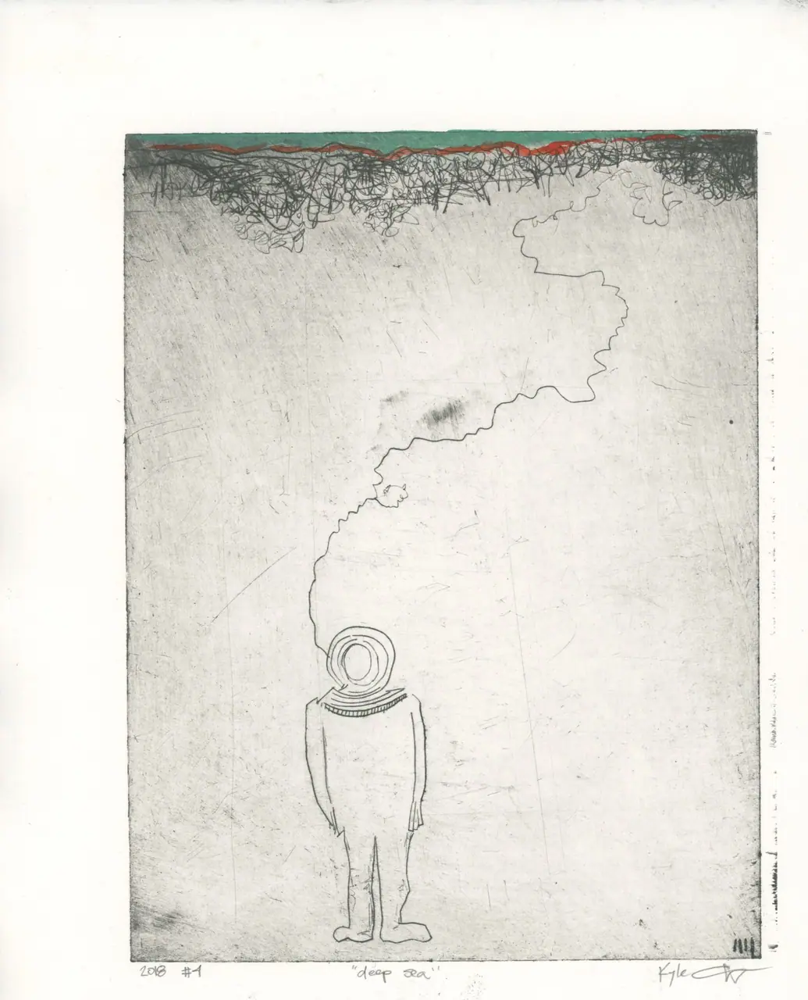
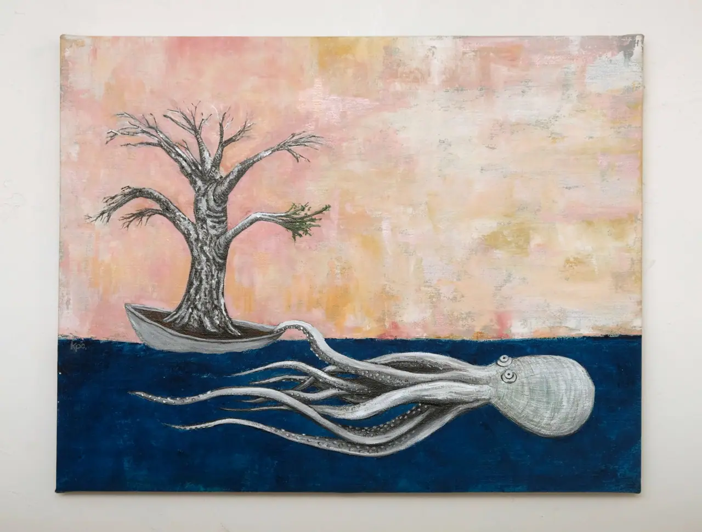
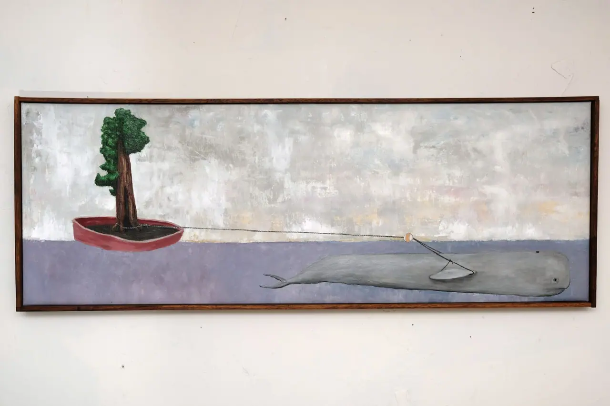
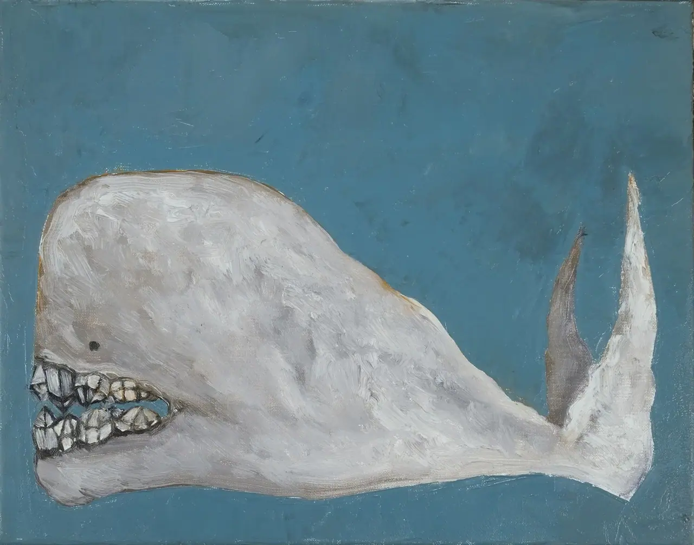
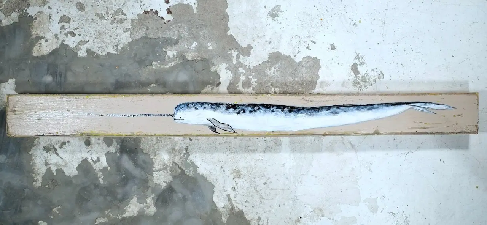
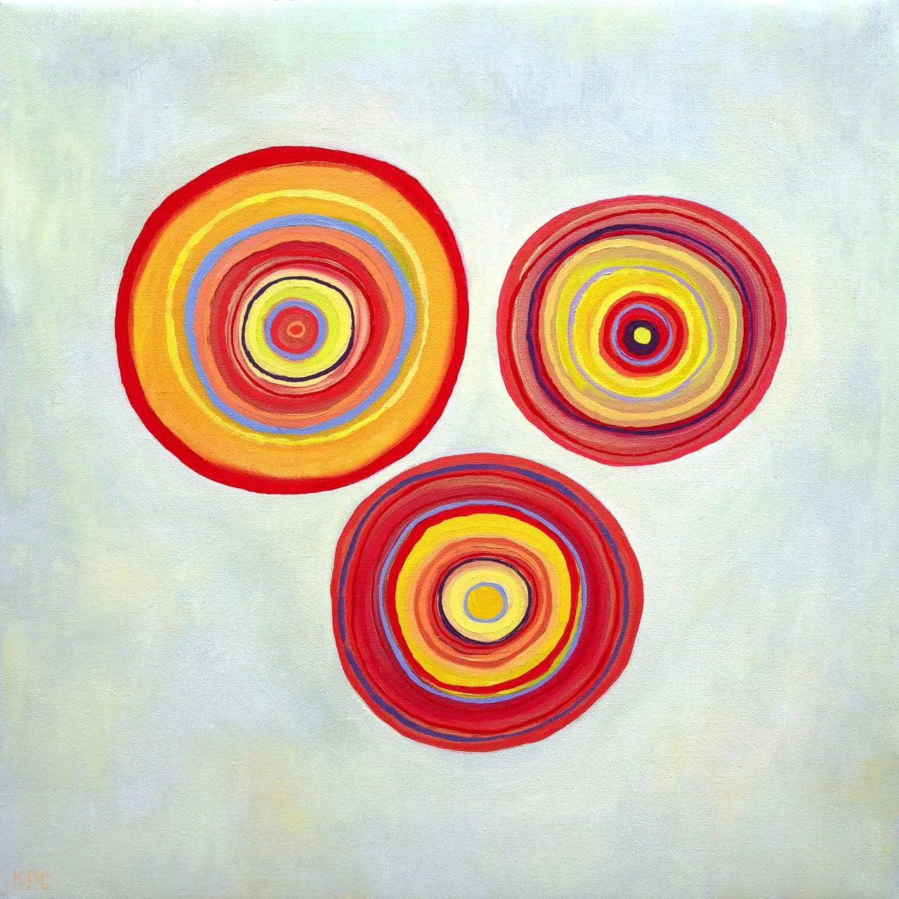
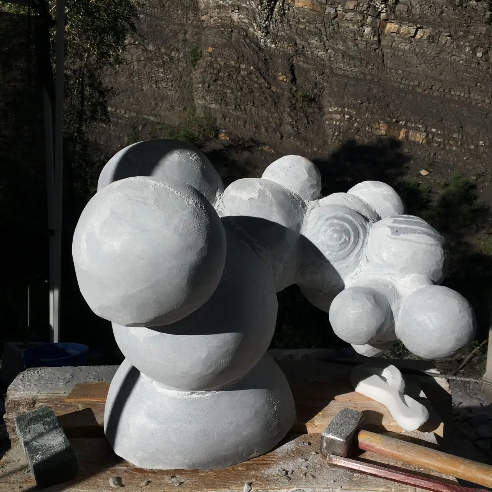

Nine works that live in water, or wish they did. They surface as you come to them and go under again as you leave. Nothing is lost — it is only below you.
scroll · about three minutes · motion respects your settings


Whatever is in the jar is a thing he thinks is running out.



Whales fly before they swim.


Plankton dreaming of a sedimentary afterlife.

The bottom. One hundred and forty-six more works are up there in the light, catalogued, measured, and considerably easier to find.
archive.kyleparkercunningham.com